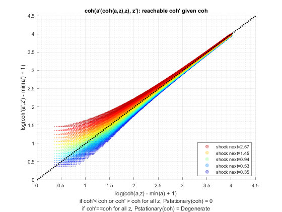
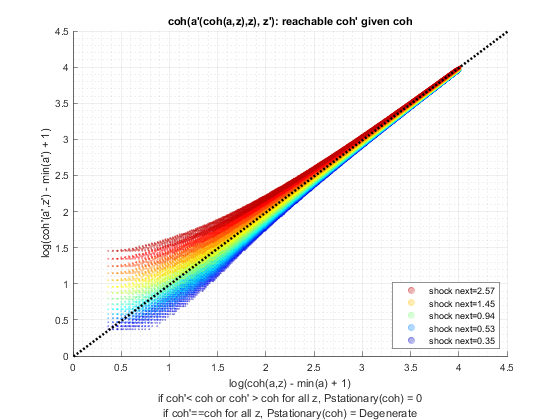

Derive Asset and Choices/Outcomes Distribution (Analytical)
back to Fan's Dynamic Assets Repository Table of Content.
Contents
- FF_AZ_DS_VECSV finds the stationary asset distributions analytically
- Default
- Parse Parameters
- Start Profiler and Timer
- Get Size of Endogenous and Exogenous State
- 1. Generate Max Index in (NxM) from (N) array.
- 2. Transition Probabilities from (M by M) to (NxM) by M
- 3. Fill mt_pol_idx_mesh_idx to mt_full_trans_mat
- 3.1 Sparse Matrix Approach
- 3.2 Full Matrix Approach
- 4. Stationary Distribution Method A, Eigenvector Approach
- 5. Stationary Distribution Method B, Projection
- 6. Stationary Distribution Method C, Power
- 7. Stationary Vector to Stationary Matrix in Original Dimensions
- End Time and Profiler
- f(y), f(c), f(a): Generate Key Distributional Statistics for Each outcome
function [result_map] = ff_az_ds_vecsv(varargin)
FF_AZ_DS_VECSV finds the stationary asset distributions analytically
Here, we implement the iteration free semi-analytical method for finding asset distributions. The method analytically give the exact stationary distribution induced by the policy function from the dynamic programming problem, conditional on discretizations.
See the appedix of Wang (2019) which develops details on how this works. Suppose endo state size is N and shock is size M, then our transition matrix is (NxM) by (NxM). We know the coh(a,z) value associated with each element of the (NxM) by 1 array. We also know f(a'(a,z),z'|z) transition probability. We contruct a markov chain that has (NxM) states. Specifically:
- We need to transform: mt_pol_idx. This matrix is indexing 1 through N, we need for it to index 1 through (NxM).
- Then we need to duplicate the transition matrix fro shocks.
- Transition Matrix is sparse
Once we have the all states meshed markov transition matrix, then we can use standard methods to find the stationary distribution. Three options are offered here that provide identical solutions:
- The Eigenvector Approach: very fast
- The Projection Approach: medium
- The Power Approach: very slow (especially with sparse matrix)
The program here builds on the Asset Dynamic Programming Problem ff_az_vf_vecsv, here we solve for the asset distribution using vectorized codes. ff_az_ds shows looped codes for finding asset distribution. The solution is the same. Both ff_az_ds and ff_az_ds_vec using optimized-vectorized dynamic programming code from ff_az_vf_vecsv. The idea here is that in addition to vectornizing the dynamic programming funcion, we can also vectorize the distribution code here.
Distributions of Interest:


Statistics include:


- percentiles:
- fraction of outcome held by up to percentiles:

@param param_map container parameter container
@param support_map container support container
@param armt_map container container with states, choices and shocks grids that are inputs for grid based solution algorithm
@param func_map container container with function handles for consumption cash-on-hand etc.
@return result_map container contains policy function matrix, value function matrix, iteration results, and policy function, value function and iteration results tables.
new keys included in result_map in addition to the output from ff_az_vf_vecsv are various distribution statistics for each model outcome, keys include cl_mt_pol_a, cl_mt_pol_c, cl_mt_pol_coh, etc.
@example
% Get Default Parameters
it_param_set = 6;
[param_map, support_map] = ffs_az_set_default_param(it_param_set);
% Change Keys in param_map
param_map('it_a_n') = 500;
param_map('it_z_n') = 11;
param_map('fl_a_max') = 100;
param_map('fl_w') = 1.3;
% Change Keys support_map
support_map('bl_display') = false;
support_map('bl_post') = true;
support_map('bl_display_final') = false;
% Call Program with external parameters that override defaults
ff_az_ds_vecsv(param_map, support_map);@include
@seealso
- derive distribution f(y'(y,z)) one asset loop: ff_az_ds
- derive distribution f(y'({x,y},z)) two assets loop: ff_akz_ds
- derive distribution f(y'({x,y},z, z')) two assets loop: ff_iwkz_ds
- derive distribution f(y'({y},z)) or f(y'({x,y},z)) vectorized: ff_az_ds_vec
- derive distribution f(y'({y},z, z')) or f(y'({x,y},z, z')) vectorized: ff_iwkz_ds_vec
- derive distribution f(y'({y},z)) or f(y'({x,y},z)) semi-analytical: ff_az_ds_vecsv
- derive distribution f(y'({y},z, z')) or f(y'({x,y},z, z')) semi-analytical: ff_iwkz_ds_vecsv
Default
Program can be externally invoked with az, abz or various other programs. By default, program invokes using az model programs:
- it_subset = 5 is basic invoke quick test
- it_subset = 6 is invoke full test
- it_subset = 7 is profiling invoke
- it_subset = 8 is matlab publish
- it_subset = 9 is invoke operational (only final stats) and coh graph
if (~isempty(varargin)) % if invoked from outside override fully [param_map, support_map, armt_map, func_map, result_map] = varargin{:}; else % default invoke close all; it_param_set = 8; bl_input_override = true; % 1. Generate Parameters [param_map, support_map] = ffs_az_set_default_param(it_param_set); % Note: param_map and support_map can be adjusted here or outside to override defaults % param_map('it_a_n') = 750; % param_map('it_z_n') = 15; param_map('st_analytical_stationary_type') = 'eigenvector'; % param_map('st_analytical_stationary_type') = 'projection'; % param_map('st_analytical_stationary_type') = 'power'; % 2. Generate function and grids [armt_map, func_map] = ffs_az_get_funcgrid(param_map, support_map, bl_input_override); % 1 for override % 3. Solve value and policy function using az_vf_vecsv, if want to solve % other models, solve outside then provide result_map as input [result_map] = ff_az_vf_vecsv(param_map, support_map, armt_map, func_map); end
----------------------------------------
----------------------------------------
xxxxxxxxxxxxxxxxxxxxxxxxxxxxxxxxxxxxxxxx
xxxxxxxxxxxxxxxxxxxxxxxxxxxxxxxxxxxxxxxx
Begin: Show all key and value pairs from container
CONTAINER NAME: SUPPORT_MAP
----------------------------------------
Map with properties:
Count: 40
KeyType: char
ValueType: any
xxxxxxxxxxxxxxxxxxxxxxxxxxxxxxxxxxxxxxxx
xxxxxxxxxxxxxxxxxxxxxxxxxxxxxxxxxxxxxxxx
----------------------------------------
----------------------------------------
pos = 26 ; key = st_img_name_main ; val = ff_az_vf_vecsv_default
pos = 27 ; key = st_img_path ; val = C:/Users/fan/CodeDynaAsset//m_az//solve/img/
pos = 28 ; key = st_img_prefix ; val =
pos = 29 ; key = st_img_suffix ; val = _p8.png
pos = 30 ; key = st_mat_name_main ; val = ff_az_vf_vecsv_default
pos = 31 ; key = st_mat_path ; val = C:/Users/fan/CodeDynaAsset//m_az//solve/mat/
pos = 32 ; key = st_mat_prefix ; val =
pos = 33 ; key = st_mat_suffix ; val = _p8
pos = 34 ; key = st_mat_test_path ; val = C:/Users/fan/CodeDynaAsset//m_az//test/ff_az_ds_vecsv/mat/
pos = 35 ; key = st_matimg_path_root ; val = C:/Users/fan/CodeDynaAsset//m_az/
pos = 36 ; key = st_profile_name_main ; val = ff_az_vf_vecsv_default
pos = 37 ; key = st_profile_path ; val = C:/Users/fan/CodeDynaAsset//m_az//solve/profile/
pos = 38 ; key = st_profile_prefix ; val =
pos = 39 ; key = st_profile_suffix ; val = _p8
pos = 40 ; key = st_title_prefix ; val =
----------------------------------------
xxxxxxxxxxxxxxxxxxxxxxxxxxxxxxxxxxxxxxxx
Scalars in Container and Sizes and Basic Statistics
xxxxxxxxxxxxxxxxxxxxxxxxxxxxxxxxxxxxxxxx
i idx value
__ ___ _____
bl_display 1 1 0
bl_display_defparam 2 2 1
bl_display_dist 3 3 0
bl_display_final 4 4 0
bl_display_final_dist 5 5 1
bl_display_final_dist_detail 6 6 1
bl_display_funcgrids 7 7 0
bl_graph 8 8 1
bl_graph_coh_t_coh 9 9 1
bl_graph_funcgrids 10 10 0
bl_graph_onebyones 11 11 1
bl_graph_pol_lvl 12 12 0
bl_graph_pol_pct 13 13 0
bl_graph_val 14 14 0
bl_img_save 15 15 0
bl_mat 16 16 0
bl_post 17 17 1
bl_profile 18 18 0
bl_profile_dist 19 19 0
bl_time 20 20 0
it_display_every 21 21 20
it_display_final_colmax 22 22 12
it_display_final_rowmax 23 23 100
it_display_summmat_colmax 24 24 5
it_display_summmat_rowmax 25 25 5
----------------------------------------
----------------------------------------
xxxxxxxxxxxxxxxxxxxxxxxxxxxxxxxxxxxxxxxx
xxxxxxxxxxxxxxxxxxxxxxxxxxxxxxxxxxxxxxxx
Begin: Show all key and value pairs from container
CONTAINER NAME: ARMT_MAP
----------------------------------------
Map with properties:
Count: 4
KeyType: char
ValueType: any
xxxxxxxxxxxxxxxxxxxxxxxxxxxxxxxxxxxxxxxx
xxxxxxxxxxxxxxxxxxxxxxxxxxxxxxxxxxxxxxxx
----------------------------------------
----------------------------------------
----------------------------------------
xxxxxxxxxxxxxxxxxxxxxxxxxxxxxxxxxxxxxxxx
Matrix in Container and Sizes and Basic Statistics
xxxxxxxxxxxxxxxxxxxxxxxxxxxxxxxxxxxxxxxx
i idx rowN colN mean std min max
_ ___ ____ ____ ________ ________ _________ _______
ar_a 1 1 1 750 25 14.463 0 50
ar_stationary 2 2 1 15 0.066667 0.060897 0.0027089 0.16757
ar_z 3 3 1 15 1.1347 0.69878 0.34741 2.567
mt_z_trans 4 4 15 15 0.066667 0.095337 0 0.27902
----------------------------------------
----------------------------------------
xxxxxxxxxxxxxxxxxxxxxxxxxxxxxxxxxxxxxxxx
xxxxxxxxxxxxxxxxxxxxxxxxxxxxxxxxxxxxxxxx
Begin: Show all key and value pairs from container
CONTAINER NAME: PARAM_MAP
----------------------------------------
Map with properties:
Count: 24
KeyType: char
ValueType: any
xxxxxxxxxxxxxxxxxxxxxxxxxxxxxxxxxxxxxxxx
xxxxxxxxxxxxxxxxxxxxxxxxxxxxxxxxxxxxxxxx
----------------------------------------
----------------------------------------
pos = 23 ; key = st_analytical_stationary_type ; val = eigenvector
pos = 24 ; key = st_model ; val = az
----------------------------------------
xxxxxxxxxxxxxxxxxxxxxxxxxxxxxxxxxxxxxxxx
Scalars in Container and Sizes and Basic Statistics
xxxxxxxxxxxxxxxxxxxxxxxxxxxxxxxxxxxxxxxx
i idx value
__ ___ _____
bl_loglin 1 1 0
fl_a_max 2 2 50
fl_a_min 3 3 0
fl_b_bd 4 4 0
fl_beta 5 5 0.94
fl_crra 6 6 1.5
fl_loglin_threshold 7 7 1
fl_nan_replace 8 8 -9999
fl_r_save 9 9 0.025
fl_tol_dist 10 10 1e-05
fl_tol_pol 11 11 1e-05
fl_tol_val 12 12 1e-05
fl_w 13 13 1.28
fl_z_mu 14 14 0
fl_z_rho 15 15 0.8
fl_z_sig 16 16 0.2
it_a_n 17 17 750
it_maxiter_dist 18 18 1000
it_maxiter_val 19 19 1000
it_tol_pol_nochange 20 20 25
it_trans_power_dist 21 21 1000
it_z_n 22 22 15
----------------------------------------
----------------------------------------
xxxxxxxxxxxxxxxxxxxxxxxxxxxxxxxxxxxxxxxx
xxxxxxxxxxxxxxxxxxxxxxxxxxxxxxxxxxxxxxxx
Begin: Show all key and value pairs from container
CONTAINER NAME: FUNC_MAP
----------------------------------------
Map with properties:
Count: 6
KeyType: char
ValueType: any
xxxxxxxxxxxxxxxxxxxxxxxxxxxxxxxxxxxxxxxx
xxxxxxxxxxxxxxxxxxxxxxxxxxxxxxxxxxxxxxxx
----------------------------------------
----------------------------------------
pos = 1 ; key = f_coh ; val = @(z,b)(z*fl_w+b.*(1+fl_r_save))
pos = 2 ; key = f_cons ; val = @(z,b,bprime)(f_coh(z,b)-bprime)
pos = 3 ; key = f_inc ; val = @(z,b)(z*fl_w+b.*(fl_r_save))
pos = 4 ; key = f_util_crra ; val = @(c)(((c).^(1-fl_crra)-1)./(1-fl_crra))
pos = 5 ; key = f_util_log ; val = @(c)log(c)
pos = 6 ; key = f_util_standin ; val = @(z,b)f_util_log(f_coh(z,b))
----------------------------------------
xxxxxxxxxxxxxxxxxxxxxxxxxxxxxxxxxxxxxxxx
Scalars in Container and Sizes and Basic Statistics
xxxxxxxxxxxxxxxxxxxxxxxxxxxxxxxxxxxxxxxx
i idx xFunction
_ ___ _________
f_coh 1 1 1
f_cons 2 2 2
f_inc 3 3 3
f_util_crra 4 4 4
f_util_log 5 5 5
f_util_standin 6 6 6
----------------------------------------
----------------------------------------
xxxxxxxxxxxxxxxxxxxxxxxxxxxxxxxxxxxxxxxx
xxxxxxxxxxxxxxxxxxxxxxxxxxxxxxxxxxxxxxxx
Begin: Show all key and value pairs from container
CONTAINER NAME: RESULT_MAP
----------------------------------------
Map with properties:
Count: 10
KeyType: char
ValueType: any
xxxxxxxxxxxxxxxxxxxxxxxxxxxxxxxxxxxxxxxx
xxxxxxxxxxxxxxxxxxxxxxxxxxxxxxxxxxxxxxxx
----------------------------------------
----------------------------------------
pos = 2 ; key = ar_st_pol_names ; val = cl_mt_val cl_mt_pol_a cl_mt_coh cl_mt_pol_c
----------------------------------------
xxxxxxxxxxxxxxxxxxxxxxxxxxxxxxxxxxxxxxxx
Matrix in Container and Sizes and Basic Statistics
xxxxxxxxxxxxxxxxxxxxxxxxxxxxxxxxxxxxxxxx
i idx rowN colN mean std min max
_ ___ ____ ____ _______ _______ _______ ______
ar_pol_diff_norm 1 1 105 1 29.079 159.48 0 1532.9
ar_val_diff_norm 2 3 105 1 10.915 26.247 0.02899 163.75
cl_mt_coh 3 4 750 15 27.077 14.84 0.44468 54.536
cl_mt_pol_a 4 5 750 15 23.941 13.926 0 49.599
cl_mt_pol_c 5 6 750 15 3.136 0.93512 0.44468 4.9363
cl_mt_val 6 7 750 15 10.288 3.1692 -1.496 15.012
mt_pol_idx 7 8 750 15 359.64 208.62 1 744
mt_pol_perc_change 8 9 105 15 0.21725 0.34614 0 1
mt_val 9 10 750 15 10.288 3.1692 -1.496 15.012
 
 Parse Parameters
% append function name st_func_name = 'ff_az_ds_vecsv'; support_map('st_profile_name_main') = [st_func_name support_map('st_profile_name_main')]; support_map('st_mat_name_main') = [st_func_name support_map('st_mat_name_main')]; support_map('st_img_name_main') = [st_func_name support_map('st_img_name_main')]; % result_map % ar_st_pol_names is from section _Process Optimal Choices_ in the value % function code. params_group = values(result_map, {'mt_pol_idx'}); [mt_pol_idx] = params_group{:}; % armt_map params_group = values(armt_map, {'mt_z_trans'}); [mt_z_trans] = params_group{:}; % param_map params_group = values(param_map, { 'it_trans_power_dist', 'st_analytical_stationary_type'}); [it_trans_power_dist, st_analytical_stationary_type] = params_group{:}; % support_map params_group = values(support_map, {'bl_profile_dist', 'st_profile_path', ... 'st_profile_prefix', 'st_profile_name_main', 'st_profile_suffix',... 'bl_time'}); [bl_profile_dist, st_profile_path, ... st_profile_prefix, st_profile_name_main, st_profile_suffix, ... bl_time] = params_group{:};
Start Profiler and Timer
% Start Profile if (bl_profile_dist) close all; profile off; profile on; end % Start Timer if (bl_time) tic; end
Get Size of Endogenous and Exogenous State
The key idea is that all information for policy function is captured by mt_pol_idx matrix, its rows are the number of endogenous states, and its columns are the exogenous shocks.
[it_endostates_rows_n, it_exostates_cols_n] = size(mt_pol_idx);
1. Generate Max Index in (NxM) from (N) array.
Suppose we have:
mt_pol_idx =
1 1 2
2 2 2
3 3 3
4 4 4
4 5 5These become:
mt_pol_idx_mesh_max =
1 6 11
2 7 12
3 8 13
4 9 14
5 10 15
1 6 11
2 7 12
3 8 13
4 9 14
5 10 15
1 6 11
2 7 12
3 8 13
4 9 14
5 10 15% mt_pol_idx_mesh_max is (NxM) by M, mt_pol_idx is N by M
mt_pol_idx_mesh_max = mt_pol_idx(:) + (0:1:(it_exostates_cols_n-1))*it_endostates_rows_n;
2. Transition Probabilities from (M by M) to (NxM) by M
mt_trans_prob =
0.9332 0.0668 0.0000 0.9332 0.0668 0.0000 0.9332 0.0668 0.0000 0.9332 0.0668 0.0000 0.9332 0.0668 0.0000 0.0062 0.9876 0.0062 0.0062 0.9876 0.0062 0.0062 0.9876 0.0062 0.0062 0.9876 0.0062 0.0062 0.9876 0.0062 0.0000 0.0668 0.9332 0.0000 0.0668 0.9332 0.0000 0.0668 0.9332 0.0000 0.0668 0.9332 0.0000 0.0668 0.9332
mt_trans_prob = reshape(repmat(mt_z_trans(:)', [it_endostates_rows_n, 1]), [it_endostates_rows_n*it_exostates_cols_n, it_exostates_cols_n]);
3. Fill mt_pol_idx_mesh_idx to mt_full_trans_mat
Try to always use sparse matrix, unless grid sizes very small, keeping non-sparse code here for comparison. Sparse matrix is important for allowing the code to be fast and memory efficient. Otherwise this method is much slower than iterative method.
it_sparse_threshold = 100*7;
if (it_endostates_rows_n*it_exostates_cols_n > it_sparse_threshold)
3.1 Sparse Matrix Approach
i = mt_pol_idx_mesh_max(:);
j = repmat((1:1:it_endostates_rows_n*it_exostates_cols_n),[1,it_exostates_cols_n])';
v = mt_trans_prob(:);
m = it_endostates_rows_n*it_exostates_cols_n;
n = it_endostates_rows_n*it_exostates_cols_n;
mt_full_trans_mat = sparse(i, j, v, m, n);
else
3.2 Full Matrix Approach
ar_lin_idx_start_point =
0 15 30 45 60 75 90 105 120 135 150 165 180 195 210
mt_pol_idx_mesh_idx_meshfull =
1 6 11 17 22 27 33 38 43 49 54 59 65 70 75 76 81 86 92 97 102 108 113 118 124 129 134 140 145 150 151 156 161 167 172 177 183 188 193 199 204 209 215 220 225
% Each row's linear index starting point ar_lin_idx_start_point = ((it_endostates_rows_n*it_exostates_cols_n)*(0:1:(it_endostates_rows_n*it_exostates_cols_n-1))); % mt_pol_idx_mesh_idx_meshfull is (NxM) by M % Full index in (NxM) to (NxM) transition Matrix mt_pol_idx_mesh_idx_meshfull = mt_pol_idx_mesh_max + ar_lin_idx_start_point'; % Fill mt_pol_idx_mesh_idx to mt_full_trans_mat mt_full_trans_mat = zeros([it_endostates_rows_n*it_exostates_cols_n, it_endostates_rows_n*it_exostates_cols_n]); mt_full_trans_mat(mt_pol_idx_mesh_idx_meshfull(:)) = mt_trans_prob(:);
end
4. Stationary Distribution Method A, Eigenvector Approach
Given that markov chain we have constructured for all state-space elements, we can now find the stationary distribution using standard eigenvector approach.
if (strcmp(st_analytical_stationary_type, 'eigenvector')) [V, ~] = eigs(mt_full_trans_mat,1,1); ar_stationary = V/sum(V); end
5. Stationary Distribution Method B, Projection
This uses Projection.
if (strcmp(st_analytical_stationary_type, 'projection')) % a. Transition - I % P = P*T % 0 = P*T - P % 0 = P*(T-1) % Q = trans_prob - np.identity(state_count); mt_diag = eye(it_endostates_rows_n*it_exostates_cols_n); if (it_endostates_rows_n*it_exostates_cols_n > it_sparse_threshold) % if larger, use sparse matrix mt_diag = sparse(mt_diag); end mt_Q = mt_full_trans_mat' - mt_diag; % b. add all 1 as final column, (because P*1 = 1) % one_col = np.ones((state_count,1)) % Q = np.column_stack((Q, one_col)) ar_one = ones([it_endostates_rows_n*it_exostates_cols_n,1]); mt_Q = [mt_Q, ar_one]; % c. b is the LHS % b = [0,0,0,...,1] % b = np.zeros((1, (state_count+1))) % b[0, state_count] = 1 ar_b = zeros([1, it_endostates_rows_n*it_exostates_cols_n+1]); if (it_endostates_rows_n*it_exostates_cols_n > it_sparse_threshold) % if larger, use sparse matrix ar_b = sparse(ar_b); end ar_b(it_endostates_rows_n*it_exostates_cols_n+1) = 1; % d. solve % b = P*Q % b*Q^{T} = P*Q*Q^{T} % P*Q*Q^{T} = b*Q^{T} % P = (b*Q^{T})[(Q*Q^{T})^{-1}] % Q_t = np.transpose(Q) % b_QT = np.dot(b, Q_t) % Q_QT = np.dot(Q, Q_t) % inv_mt_Q_QT = inv(mt_Q*mt_Q'); ar_stationary = (ar_b*mt_Q')/(mt_Q*mt_Q'); end
6. Stationary Distribution Method C, Power
Takes markov chain to Nth power. This is the slowest.
if (strcmp(st_analytical_stationary_type, 'power')) mt_stationary_full = (mt_full_trans_mat)^it_trans_power_dist; ar_stationary = mt_stationary_full(:,1); end
7. Stationary Vector to Stationary Matrix in Original Dimensions
mt_dist_az = reshape(ar_stationary, size(mt_pol_idx));
End Time and Profiler
% End Timer if (bl_time) toc; end % End Profile if (bl_profile_dist) profile off profile viewer st_file_name = [st_profile_prefix st_profile_name_main st_profile_suffix]; profsave(profile('info'), strcat(st_profile_path, st_file_name)); end
f(y), f(c), f(a): Generate Key Distributional Statistics for Each outcome
Having derived f(a,z) the probability mass function of the joint discrete random variables, we now obtain distributional statistics. Note that we know f(a,z), and we also know relevant policy functions a'(a,z), c(a,z), or other policy functions. We can simulate any choices that are a function of the random variables (a,z), using f(a,z). We call function ff_az_ds_post_stats which uses fft_disc_rand_var_stats and fft_disc_rand_var_mass2outcomes to compute various statistics of interest.
bl_input_override = true; result_map = ff_az_ds_post_stats(support_map, result_map, mt_dist_az, bl_input_override);
----------------------------------------
xxxxxxxxxxxxxxxxxxxxxxxxxxxxxxxxxxxxxxxx
Summary Statistics for: cl_mt_val
xxxxxxxxxxxxxxxxxxxxxxxxxxxxxxxxxxxxxxxx
----------------------------------------
fl_choice_mean
3.2157
fl_choice_sd
1.5948
fl_choice_coefofvar
0.4959
fl_choice_prob_zero
0
fl_choice_prob_below_zero
0.0237
fl_choice_prob_above_zero
0.9763
fl_choice_prob_max
7.6404e-37
tb_disc_cumu
cl_mt_valDiscreteVal cl_mt_valDiscreteValProbMass CDF cumsumFrac
____________________ ____________________________ _______ __________
-1.496 0.0022504 0.22504 -0.0010469
-1.2889 0.00011697 0.23674 -0.0010938
-1.1195 5.0108e-05 0.24175 -0.0011113
-0.96773 5.0841e-05 0.24683 -0.0011266
-0.85738 0.0054609 0.79292 -0.0025826
-0.82642 2.8066e-05 0.79573 -0.0025898
-0.69878 2.9571e-05 0.79869 -0.0025962
-0.68792 0.00036428 0.83512 -0.0026742
-0.57856 2.2451e-05 0.83736 -0.0026782
-0.54598 0.000144 0.85176 -0.0027026
cl_mt_valDiscreteVal cl_mt_valDiscreteValProbMass CDF cumsumFrac
____________________ ____________________________ ___ __________
14.956 -4.1119e-38 100 1
14.962 -5.9703e-37 100 1
14.968 -3.0565e-37 100 1
14.975 -8.9711e-37 100 1
14.981 -1.4634e-36 100 1
14.987 3.3654e-39 100 1
14.993 3.5858e-36 100 1
14.999 -4.6852e-38 100 1
15.006 9.0524e-37 100 1
15.012 7.6404e-37 100 1
tb_prob_drv
percentiles cl_mt_valDiscreteValPercentileValues fracOfSumHeldBelowThisPercentile
___________ ____________________________________ ________________________________
0.1 -1.496 -0.0010469
1 -0.20677 -0.0036092
5 0.4326 0.00013299
10 1.051 0.016603
15 1.6461 0.054888
20 1.7912 0.064607
25 2.2186 0.1208
35 2.6167 0.16828
50 3.239 0.30279
65 3.834 0.46984
75 4.2838 0.59112
80 4.5488 0.66006
85 4.8767 0.73292
90 5.2801 0.81147
95 5.8899 0.89785
99 7.0098 0.97685
99.9 8.0879 0.99741
----------------------------------------
xxxxxxxxxxxxxxxxxxxxxxxxxxxxxxxxxxxxxxxx
Summary Statistics for: cl_mt_pol_a
xxxxxxxxxxxxxxxxxxxxxxxxxxxxxxxxxxxxxxxx
----------------------------------------
fl_choice_mean
0.8302
fl_choice_sd
1.1777
fl_choice_coefofvar
1.4186
fl_choice_prob_zero
0.2816
fl_choice_prob_below_zero
0
fl_choice_prob_above_zero
0.7184
fl_choice_prob_max
7.6404e-37
tb_disc_cumu
cl_mt_pol_aDiscreteVal cl_mt_pol_aDiscreteValProbMass CDF cumsumFrac
______________________ ______________________________ ______ __________
0 0.2816 28.16 0
0.066756 0.06379 34.539 0.0051292
0.13351 0.035757 38.115 0.01088
0.20027 0.051963 43.311 0.023414
0.26702 0.034354 46.746 0.034464
0.33378 0.034466 50.193 0.04832
0.40053 0.033489 53.542 0.064477
0.46729 0.023335 55.875 0.077611
0.53405 0.030341 58.91 0.097129
0.6008 0.023923 61.302 0.11444
cl_mt_pol_aDiscreteVal cl_mt_pol_aDiscreteValProbMass CDF cumsumFrac
______________________ ______________________________ ___ __________
48.999 3.7544e-37 100 1
49.065 -2.3412e-36 100 1
49.132 4.1418e-37 100 1
49.199 -5.653e-37 100 1
49.266 -1.4634e-36 100 1
49.332 3.3654e-39 100 1
49.399 3.5858e-36 100 1
49.466 -4.6852e-38 100 1
49.533 9.0524e-37 100 1
49.599 7.6404e-37 100 1
tb_prob_drv
percentiles cl_mt_pol_aDiscreteValPercentileValues fracOfSumHeldBelowThisPercentile
___________ ______________________________________ ________________________________
0.1 0 0
1 0 0
5 0 0
10 0 0
15 0 0
20 0 0
25 0 0
35 0.13351 0.01088
50 0.33378 0.04832
65 0.73431 0.14695
75 1.1348 0.26012
80 1.4686 0.35487
85 1.8024 0.43805
90 2.3364 0.56666
95 3.271 0.73106
99 5.3405 0.92164
99.9 8.0774 0.98952
----------------------------------------
xxxxxxxxxxxxxxxxxxxxxxxxxxxxxxxxxxxxxxxx
Summary Statistics for: cl_mt_coh
xxxxxxxxxxxxxxxxxxxxxxxxxxxxxxxxxxxxxxxx
----------------------------------------
fl_choice_mean
2.1310
fl_choice_sd
1.4656
fl_choice_coefofvar
0.6878
fl_choice_prob_zero
0
fl_choice_prob_below_zero
0
fl_choice_prob_above_zero
1.0000
fl_choice_prob_max
7.6404e-37
tb_disc_cumu
cl_mt_cohDiscreteVal cl_mt_cohDiscreteValProbMass CDF cumsumFrac
____________________ ____________________________ _______ __________
0.44468 0.0022504 0.22504 0.00046961
0.51297 0.0054609 0.77113 0.0017842
0.51311 0.00011697 0.78283 0.0018123
0.5814 0.00036428 0.81926 0.0019117
0.58153 5.0108e-05 0.82427 0.0019254
0.59175 0.013554 2.1797 0.0056892
0.64982 0.000144 2.1941 0.0057331
0.64996 5.0841e-05 2.1991 0.0057486
0.66017 0.0011392 2.3131 0.0061015
0.68262 0.027201 5.0332 0.014815
cl_mt_cohDiscreteVal cl_mt_cohDiscreteValProbMass CDF cumsumFrac
____________________ ____________________________ ___ __________
54.03 7.1983e-37 100 1
54.057 -3.0565e-37 100 1
54.098 3.318e-37 100 1
54.125 -8.9711e-37 100 1
54.194 -1.4634e-36 100 1
54.262 3.3654e-39 100 1
54.331 3.5858e-36 100 1
54.399 -4.6852e-38 100 1
54.467 9.0524e-37 100 1
54.536 7.6404e-37 100 1
tb_prob_drv
percentiles cl_mt_cohDiscreteValPercentileValues fracOfSumHeldBelowThisPercentile
___________ ____________________________________ ________________________________
0.1 0.44468 0.00046961
1 0.59175 0.0056892
5 0.68262 0.014815
10 0.85587 0.035385
15 0.90837 0.06043
20 1.0479 0.098946
25 1.1136 0.10384
35 1.2772 0.15923
50 1.6681 0.2648
65 2.1977 0.39995
75 2.6879 0.51075
80 3.0188 0.57803
85 3.4427 0.65282
90 4.0585 0.74062
95 5.1064 0.84656
99 7.4642 0.95922
99.9 10.402 0.99464
----------------------------------------
xxxxxxxxxxxxxxxxxxxxxxxxxxxxxxxxxxxxxxxx
Summary Statistics for: cl_mt_pol_c
xxxxxxxxxxxxxxxxxxxxxxxxxxxxxxxxxxxxxxxx
----------------------------------------
fl_choice_mean
1.3008
fl_choice_sd
0.3450
fl_choice_coefofvar
0.2652
fl_choice_prob_zero
0
fl_choice_prob_below_zero
0
fl_choice_prob_above_zero
1.0000
fl_choice_prob_max
7.6404e-37
tb_disc_cumu
cl_mt_pol_cDiscreteVal cl_mt_pol_cDiscreteValProbMass CDF cumsumFrac
______________________ ______________________________ _______ __________
0.44468 0.0022504 0.22504 0.00076933
0.51297 0.0054609 0.77113 0.0029229
0.51311 0.00011697 0.78283 0.0029691
0.5814 0.00036428 0.81926 0.0031319
0.58153 5.0108e-05 0.82427 0.0031543
0.5832 5.0841e-05 0.82935 0.0031771
0.59175 0.013554 2.1847 0.0093431
0.64982 0.000144 2.1991 0.0094151
0.65149 0.00017056 2.2162 0.0095005
0.65163 2.8066e-05 2.219 0.0095145
cl_mt_pol_cDiscreteVal cl_mt_pol_cDiscreteValProbMass CDF cumsumFrac
______________________ ______________________________ ___ __________
4.9213 -4.1119e-38 100 1
4.923 -5.9703e-37 100 1
4.9246 -3.0565e-37 100 1
4.9263 -8.9711e-37 100 1
4.928 -1.4634e-36 100 1
4.9297 3.3654e-39 100 1
4.9313 3.5858e-36 100 1
4.933 -4.6852e-38 100 1
4.9347 9.0524e-37 100 1
4.9363 7.6404e-37 100 1
tb_prob_drv
percentiles cl_mt_pol_cDiscreteValPercentileValues fracOfSumHeldBelowThisPercentile
___________ ______________________________________ ________________________________
0.1 0.44468 0.00076933
1 0.59175 0.0093431
5 0.68262 0.024382
10 0.81947 0.054893
15 0.90837 0.10337
20 1.0257 0.12476
25 1.0479 0.17681
35 1.1964 0.25339
50 1.3276 0.41348
65 1.4161 0.55331
75 1.5268 0.6673
80 1.5952 0.72762
85 1.6619 0.78838
90 1.7521 0.85358
95 1.8668 0.92271
99 2.1241 0.98298
99.9 2.3562 0.99811
OriginalVariableNames cl_mt_val cl_mt_pol_a cl_mt_coh cl_mt_pol_c
_____________________ __________ ___________ __________ ___________
'mean' 3.2157 0.83022 2.131 1.3008
'sd' 1.5948 1.1777 1.4656 0.34502
'coefofvar' 0.49595 1.4186 0.68776 0.26525
'min' -1.496 0 0.44468 0.44468
'max' 15.012 49.599 54.536 4.9363
'pYis0' 0 0.2816 0 0
'pYls0' 0.023708 0 0 0
'pYgr0' 0.97629 0.7184 1 1
'pYisMINY' 0.0022504 0.2816 0.0022504 0.0022504
'pYisMAXY' 7.6404e-37 7.6404e-37 7.6404e-37 7.6404e-37
'p0_1' -1.496 0 0.44468 0.44468
'p1' -0.20677 0 0.59175 0.59175
'p5' 0.4326 0 0.68262 0.68262
'p10' 1.051 0 0.85587 0.81947
'p15' 1.6461 0 0.90837 0.90837
'p20' 1.7912 0 1.0479 1.0257
'p25' 2.2186 0 1.1136 1.0479
'p35' 2.6167 0.13351 1.2772 1.1964
'p50' 3.239 0.33378 1.6681 1.3276
'p65' 3.834 0.73431 2.1977 1.4161
'p75' 4.2838 1.1348 2.6879 1.5268
'p80' 4.5488 1.4686 3.0188 1.5952
'p85' 4.8767 1.8024 3.4427 1.6619
'p90' 5.2801 2.3364 4.0585 1.7521
'p95' 5.8899 3.271 5.1064 1.8668
'p99' 7.0098 5.3405 7.4642 2.1241
'p99_9' 8.0879 8.0774 10.402 2.3562
'fl_cov_cl_mt_val' 2.5434 1.464 2.0116 0.54759
'fl_cor_cl_mt_val' 1 0.77944 0.86061 0.99518
'fl_cov_cl_mt_pol_a' 1.464 1.387 1.708 0.32097
'fl_cor_cl_mt_pol_a' 0.77944 1 0.98953 0.78991
'fl_cov_cl_mt_coh' 2.0116 1.708 2.148 0.44001
'fl_cor_cl_mt_coh' 0.86061 0.98953 1 0.87016
'fl_cov_cl_mt_pol_c' 0.54759 0.32097 0.44001 0.11904
'fl_cor_cl_mt_pol_c' 0.99518 0.78991 0.87016 1
'fracByP0_1' -0.0010469 0 0.00046961 0.00076933
'fracByP1' -0.0036092 0 0.0056892 0.0093431
'fracByP5' 0.00013299 0 0.014815 0.024382
'fracByP10' 0.016603 0 0.035385 0.054893
'fracByP15' 0.054888 0 0.06043 0.10337
'fracByP20' 0.064607 0 0.098946 0.12476
'fracByP25' 0.1208 0 0.10384 0.17681
'fracByP35' 0.16828 0.01088 0.15923 0.25339
'fracByP50' 0.30279 0.04832 0.2648 0.41348
'fracByP65' 0.46984 0.14695 0.39995 0.55331
'fracByP75' 0.59112 0.26012 0.51075 0.6673
'fracByP80' 0.66006 0.35487 0.57803 0.72762
'fracByP85' 0.73292 0.43805 0.65282 0.78838
'fracByP90' 0.81147 0.56666 0.74062 0.85358
'fracByP95' 0.89785 0.73106 0.84656 0.92271
'fracByP99' 0.97685 0.92164 0.95922 0.98298
'fracByP99_9' 0.99741 0.98952 0.99464 0.99811
end
ans =
Map with properties:
Count: 12
KeyType: char
ValueType: any